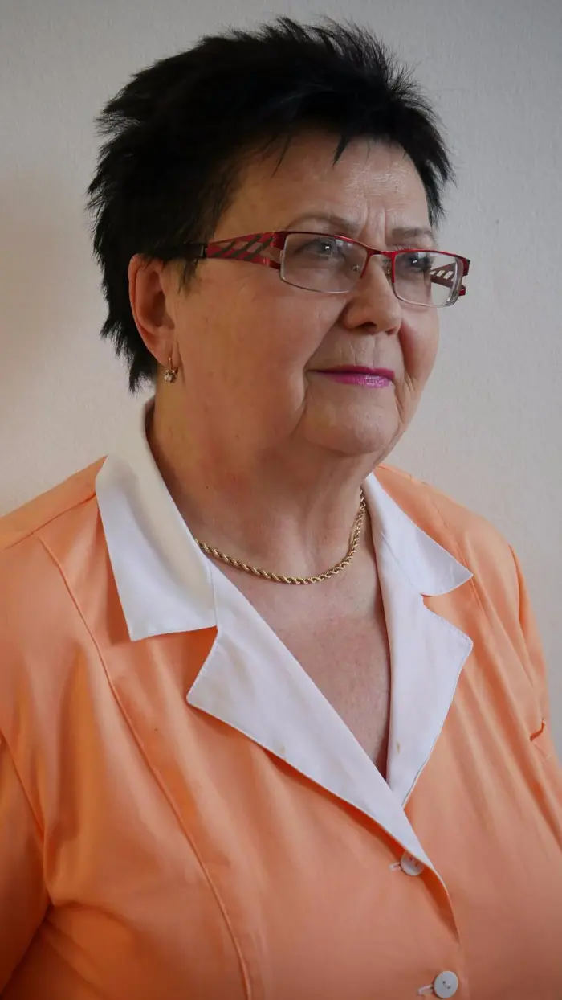
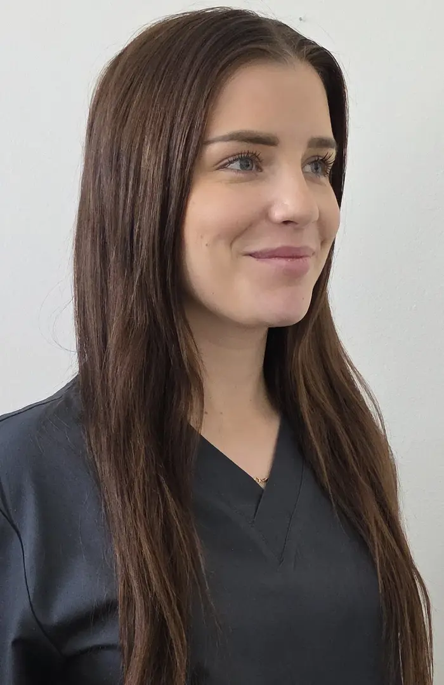
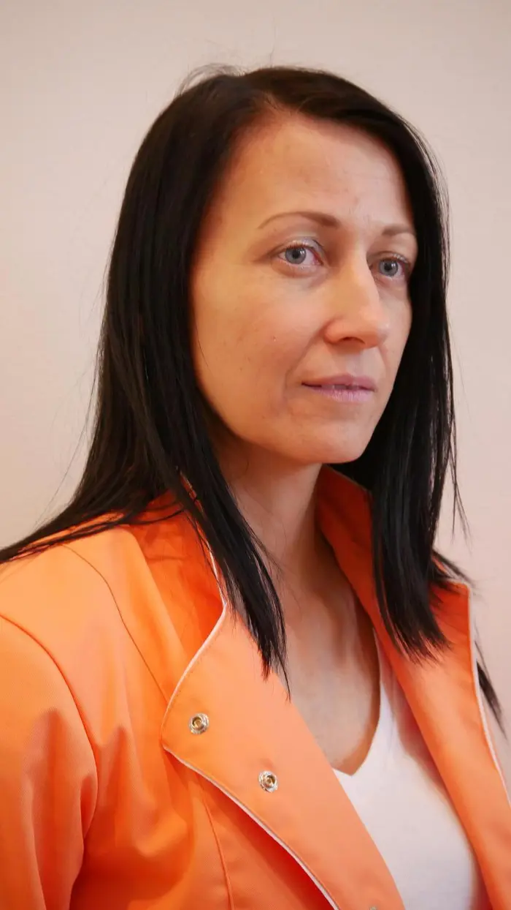

1. ledna 2016 došlo ke změně podnikající fyzické osoby MUDr. Ludmily Dufkové na společnost s ručením omezeným Dentalstyl. Pro stávající pacienty se nic nemění, MUDr. Ludmila Dufková zůstává ošetřující hlavní lékařkou. Naším společným cílem je poskytovat kvalitní zubní péči pacientům a nadále ji rozvíjet.
Dne 23. 10. 2018 získala firma Dentalstyl s.r.o. statut akreditovaného zařízení pro zajištění odborné praxe v rámci praktické části aprobační zkoušky uchazeče o uznání způsobilosti k výkonu povolání zubního lékaře.
Náš tým

MUDr. Ludmila Dufková
Vedoucí lékař v Dentalstyl s.r.o. / zubní lékař s osvědčením odbornosti
Specializuje se na záchovnou a preventivní stomatologii, endodoncii, protetickou a estetickou stomatologii. Odbornost stále zdokonaluje a pravidelně navštěvuje vzdělávací akce a semináře.
Vzdělání a praxe
- 1973 – ukončení Lékařské fakulty v oboru stomatologie
- 1982 – atestace prvního stupně
- Certifikát v oboru estetické stomatologie
- Certifikáty v oboru bělení zubů (BEYOND™, Opalescence, Rembrandt)
- Certifikát fixní protetiky a fixní keramiky

Sandra Raiskupová
Zubní instrumentářka
„Každý pacient si zaslouží klid, důvěru a péči.“ V roce 2025 jsem úspěšně absolvovala kurz zubní instrumentářky, díky kterému jsem si rozšířila své odborné znalosti a dovednosti v oblasti stomatologie. V současnosti se aktivně podílím na chodu ordinace, kde se starám nejen o asistenci při výkonech, ale také o pohodlí a spokojenost pacientů.

Ing. Alena Dufková
Externí konzultant
V roce 2000 ukončila vyšší odbornou školu obchodně právní. Dále pokračovala ve studiu na Vysoké škole podnikání v Ostravě, studium zakončila v roce 2010.